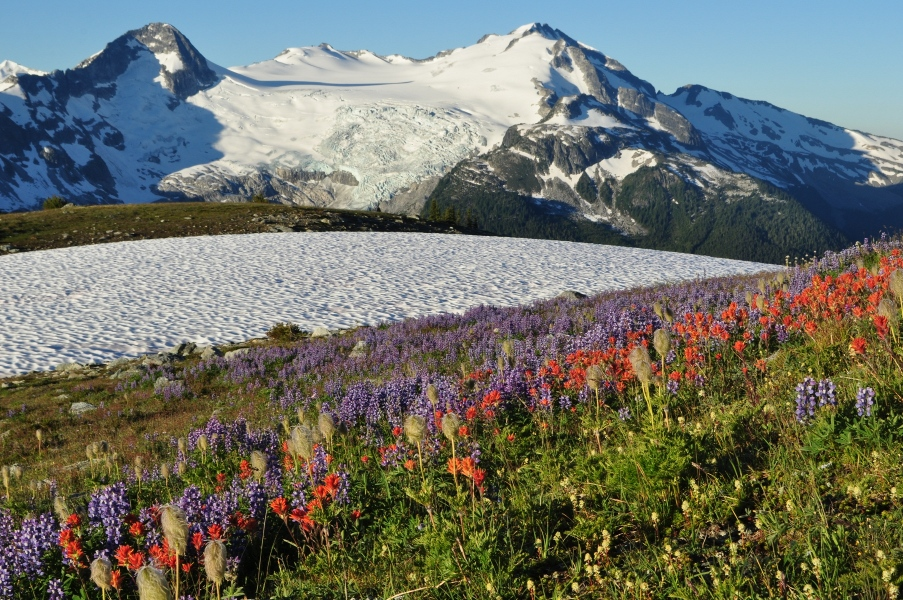
The massive Cheakamus glacier sandwiched between Mt Davidson (L) and Castle Towers (R) viewed from a wildflower meadow near Russet Lake, Whistler BC.
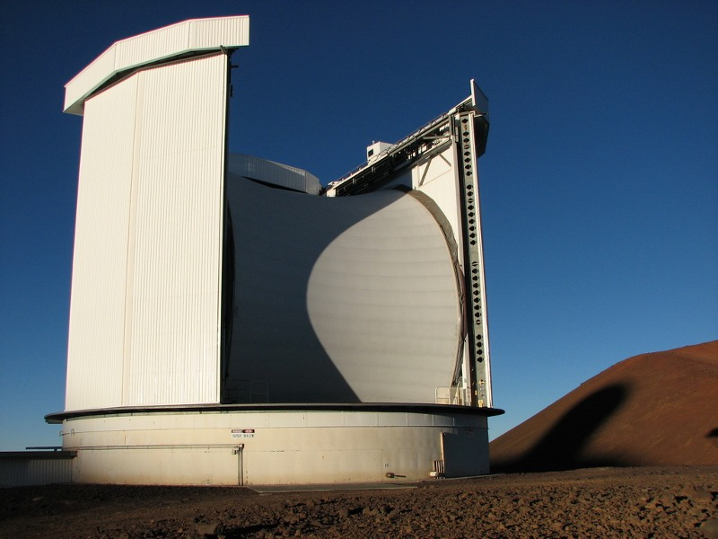
The carousel of the James Clerk Maxwell Telescope on Mauna Kea, HI, operated jointly by the UK, Canada and the Netherlands. The telescope is hidden behind a Gore-Tex windblind for protection. With a 15-m diameter dish, it is still the world's largest submillimetre telescope.
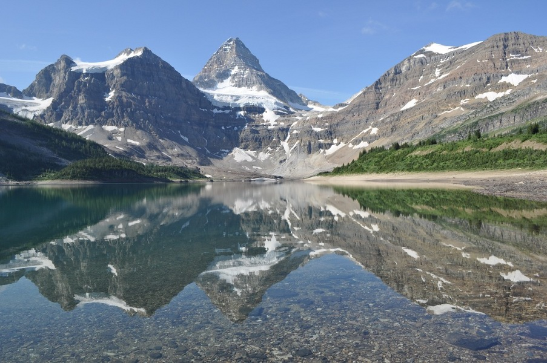
The Matterhorn of the Rockies: Mt Assiniboine reflected in Lake Magog, Mt Assiniboine Provincial Park BC
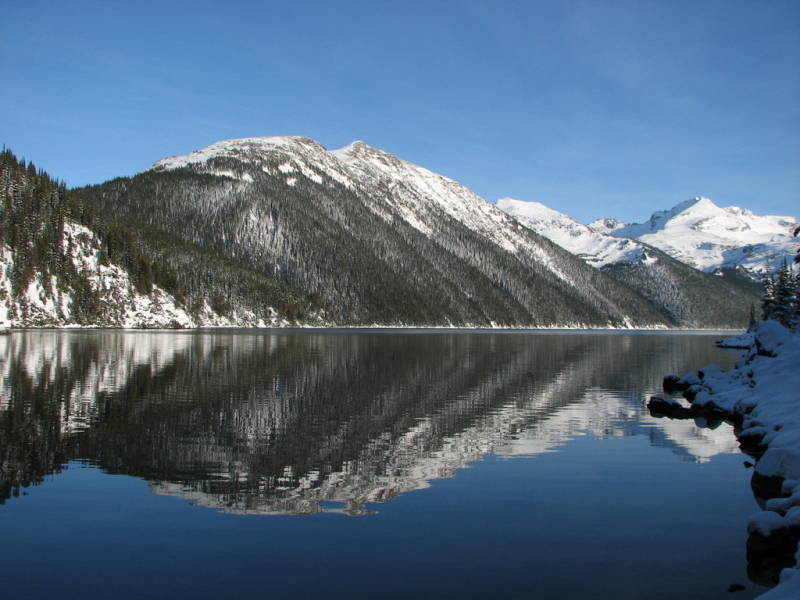
Early winter snow on Panorama Ridge reflected in Garibaldi Lake, Garibaldi Provincial Park BC
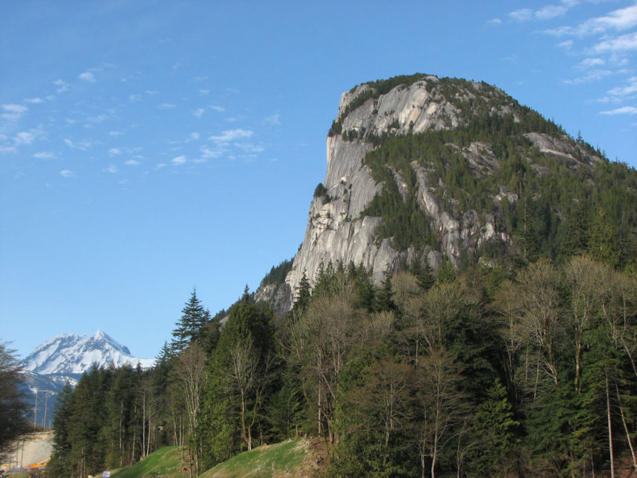
The Stawamus Chief, a massive granite monolith, is popular with hikers and rock climbers alike. The hikers' trail is only slightly less steep than the climbers' routes ;-) At the left is Mt Garibaldi (2678 m, 8786 ft), the peak from which Garibaldi provincial park takes its name.
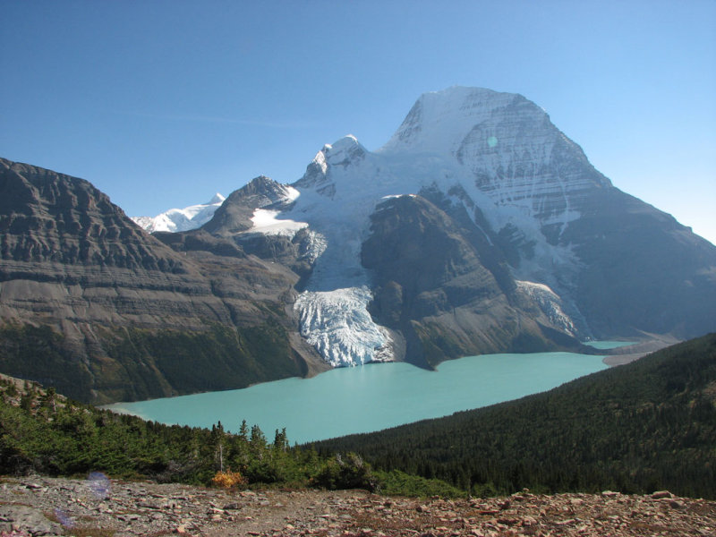
The Berg Glacier cascading into Berg Lake below Mount Robson (Mt Robson Provincial Park, BC), the highest peak in the Canadian Rockies at 3954 m (12,972 ft). The sound of the glacier calving into the lake is enough to keep you awake at night.
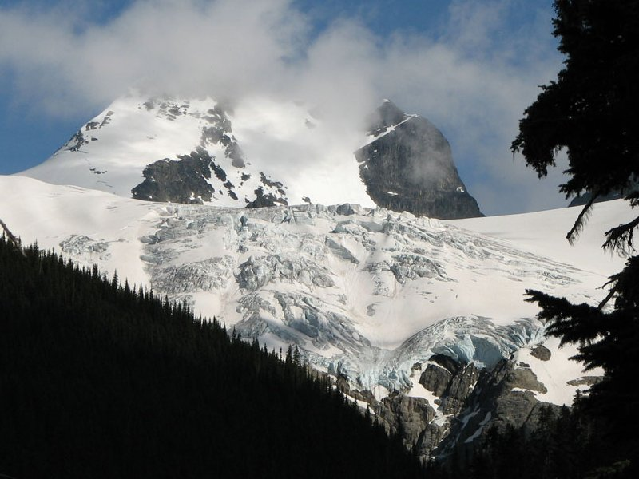
The Matier Glacier, draped over the rocks like a massive icy blanket in Joffre Lakes Provincial Park, BC.
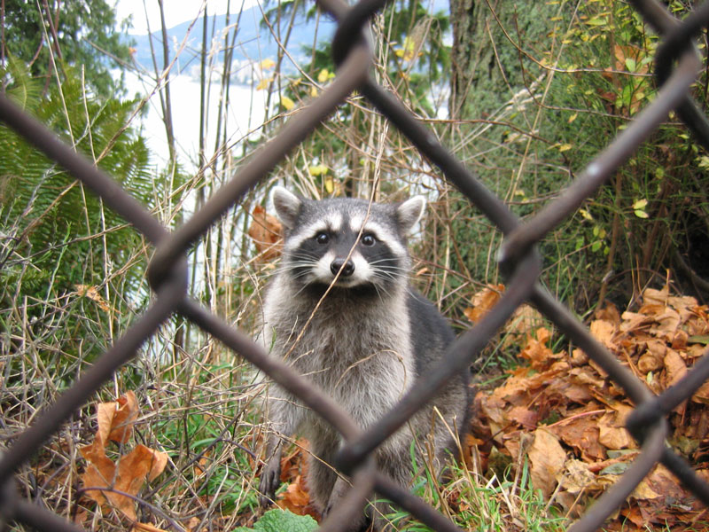
The Masked Bandit of Stanley Park. Well, one of them. Procyon lotor looking for an easy handout. Unfortunately, too many tourists are willing to oblige.
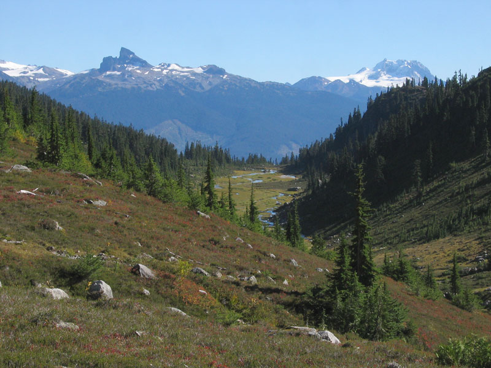
The Black Tusk and Mt Garibaldi from Brandywine Meadows. According to legend, the Black Tusk is the home of the mythical Thunderbird, which created thunder when it flapped its wings.
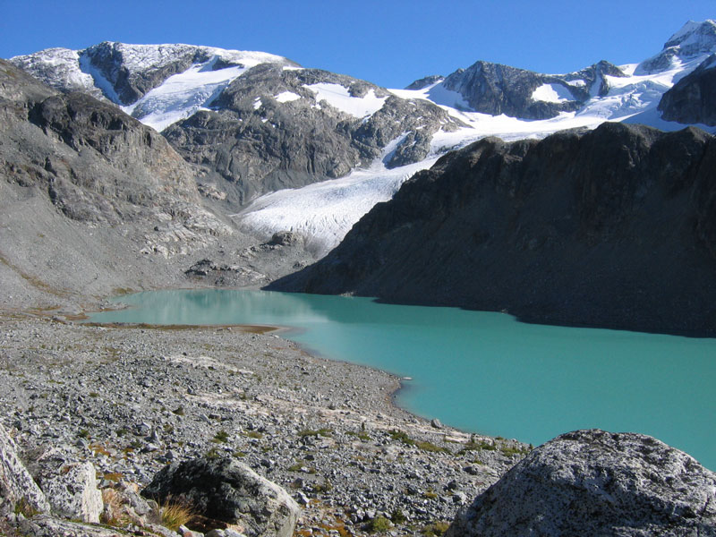
Wedgemount Lake and its receding glacier, near Whistler BC
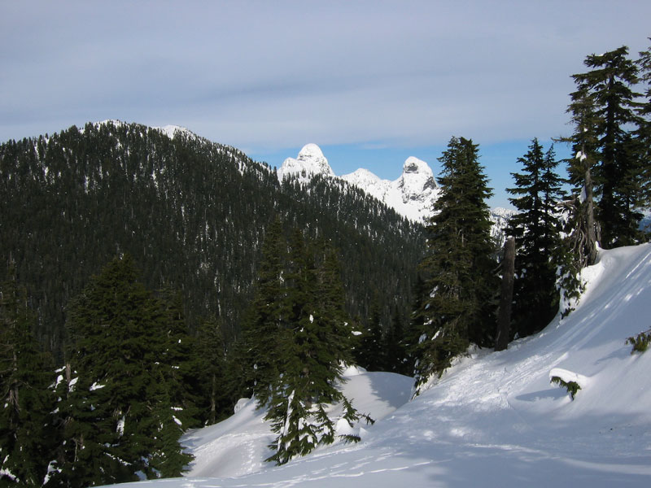
The Lions, a well-known Vancouver landmark, from St Mark's summit, Cypress Provincial Park, BC
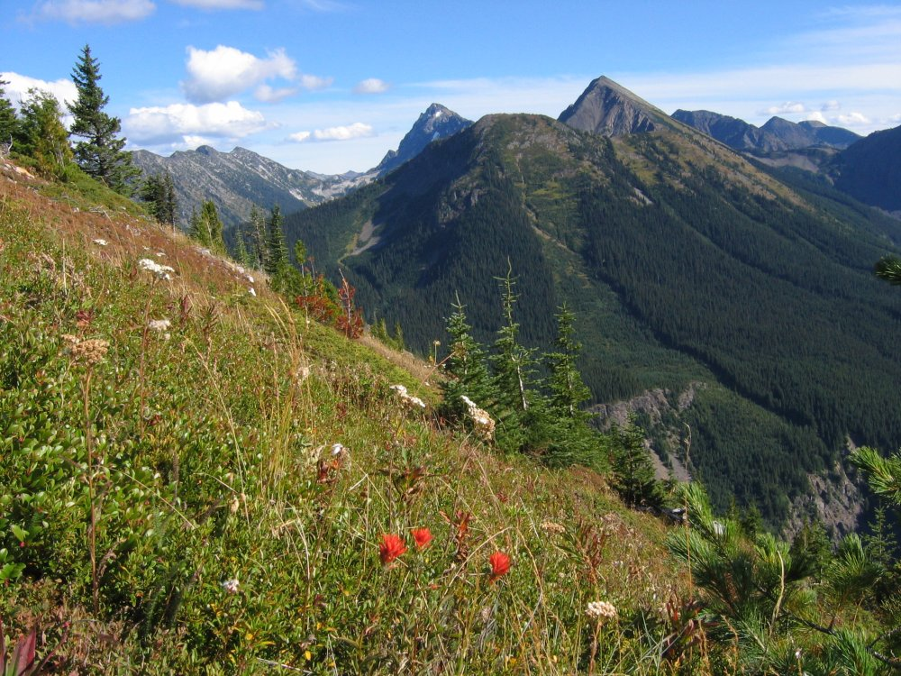
Looking south from Skyline II trail, Manning Provincial Park, BC
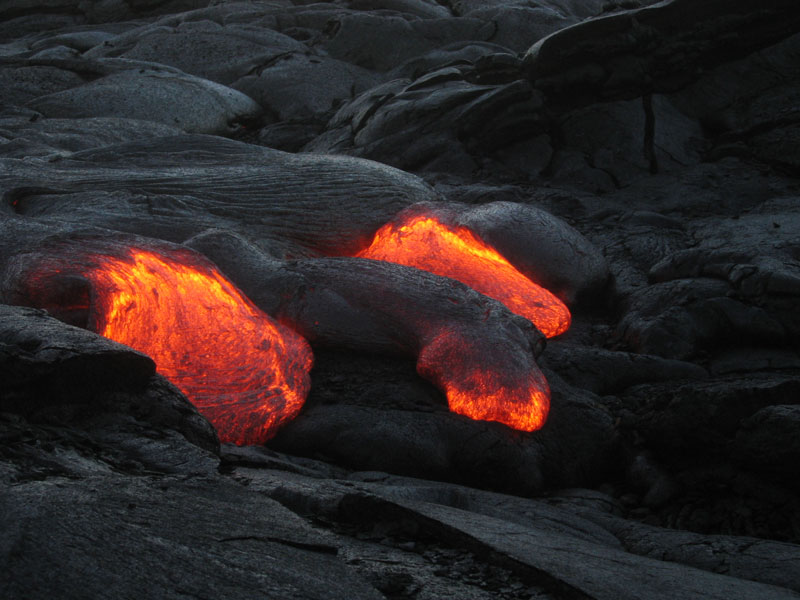
Close encounter with lava in Hawaii Volcanoes National Park
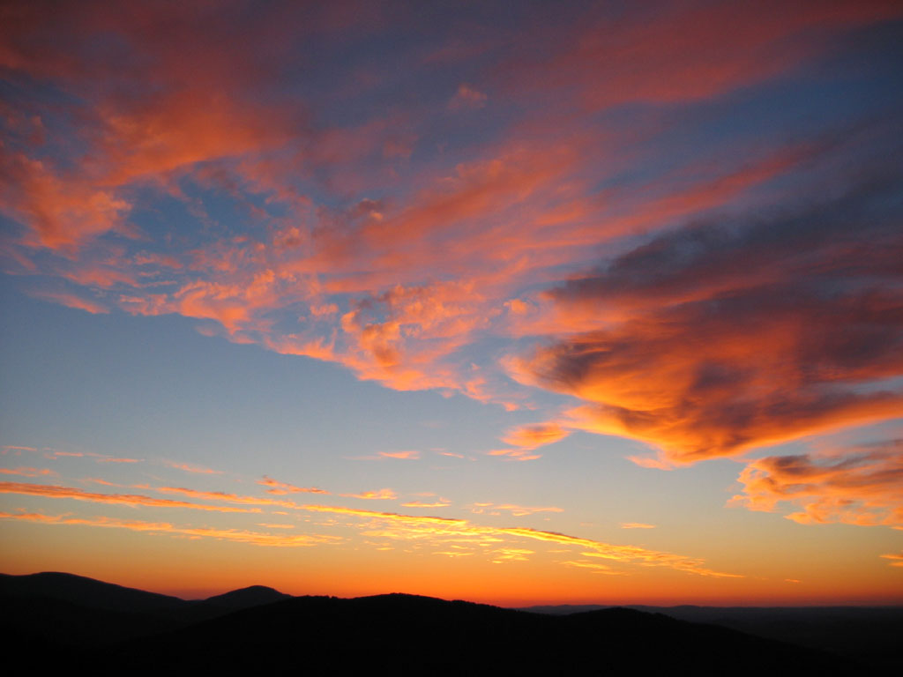
Summer sunrise from Skyline Drive, Shenandoah NP, Virginia
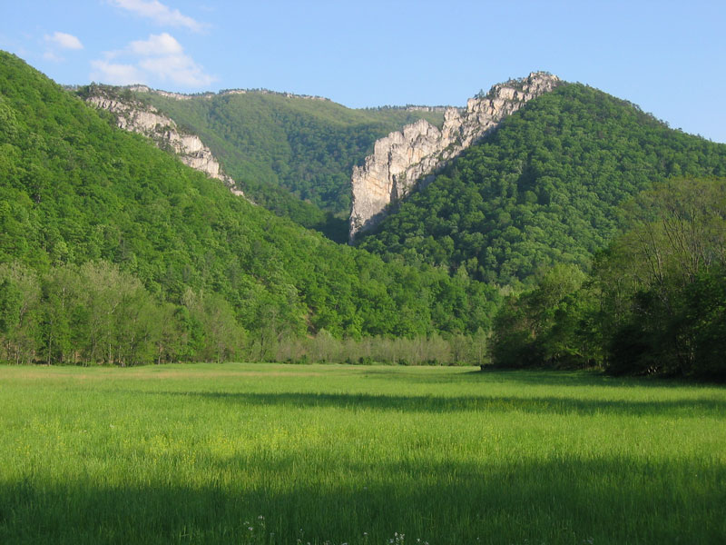
The knife-edge of Champe Rocks, West Virginia
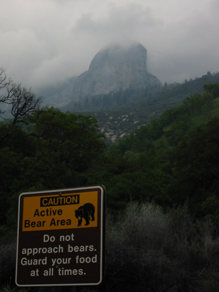
You have been warned! Beneath a mist-capped Moro Rock, Sequoia National Park, CA
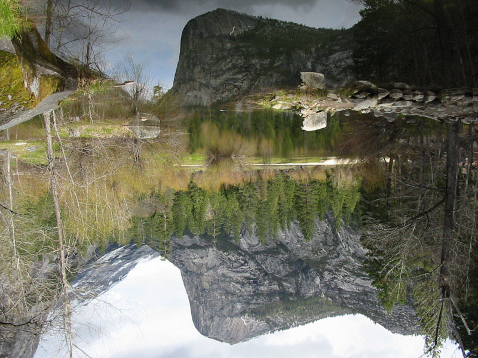
Which way is up? Mt Watkins viewed in Mirror Lake, Yosemite National Park
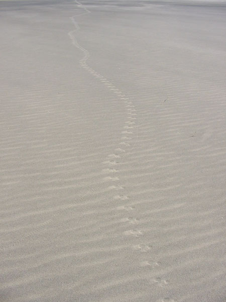
Lizard tracks in the sand at Eureka Dunes in Death Valley National Park
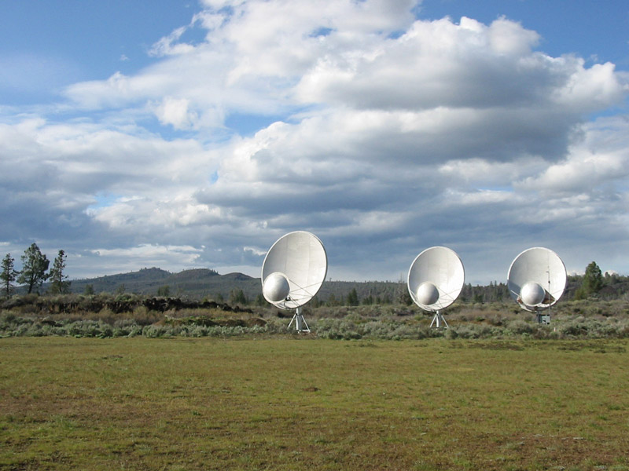
The first three antennas of the Allen Telescope Array to be situated at Hat Creek, CA. A total of 350 is planned to carry out SETI projects. Oh and they may do some astronomy too... :-)
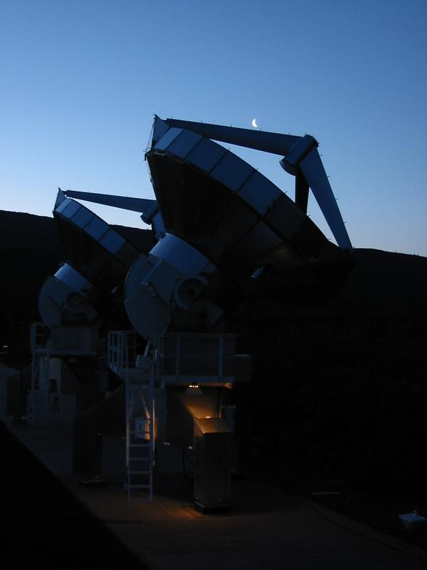
Two of the ten antennas of the BIMA interferometer based at Hat Creek, CA. Each antenna is only 6.1 m (20 ft) in diameter but the signals from the ten telescopes are combined to simulate a much larger telescope (up to 1 km across).
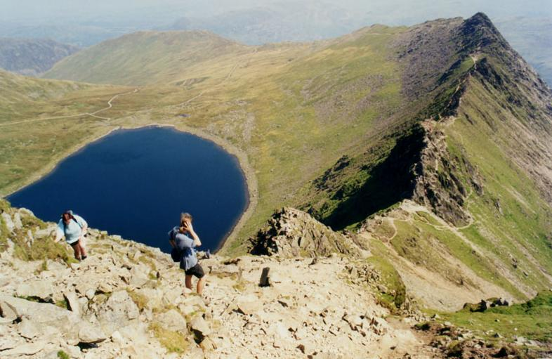
From whence we came: looking back along Striding Edge and Red Tarn on the approach to the summit of Helvellyn (950 m/3116 ft) in the English Lake District. What a fantastic walk....
Atmospheric transmission at frequencies below 1000 GHz near the summit of Mauna Kea, Hawaii, 4000 m (13 200 ft) above sea level. Notice how it becomes harder to see through the atmosphere at high frequencies with increasing amounts of water. This is why many telescopes are put on top of tall mountains.